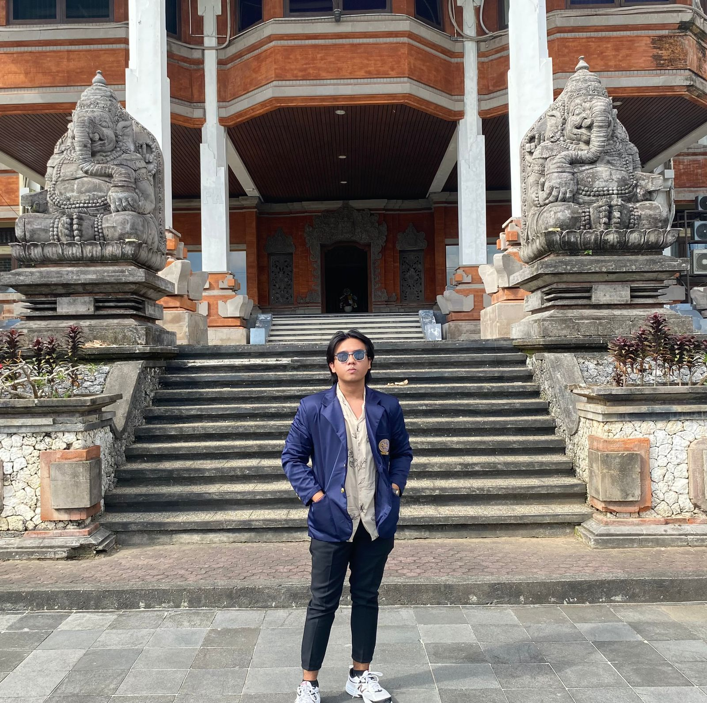

Tugas Tool TI
U Can Call Me "Aiven"
Haloo, Nama lengkap saya I Made Ivan Ari mahayana,
Nim saya 2405551015
Saya sedang berkuliah di Universitas Udayana.
Saya berada di Fakultas Teknik
lebih tepatnya Teknologi Informasi, saya sangat bangga untuk menjadi bagian dari kelas TI,
Saya merupakan seorang maba tahun 2024 banyak hal yang sudah saya pelajari di sini
terutama di bidang Teknologi, pemrograman, dan jaringan.
